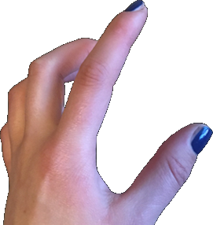

From yours to mine is a collaborative project that we started in Glasgow 2019. It looks at the complexity of personal digital data, with particular emphasis on the relationship between the body and how it’s entangled with artificial intelligence. We are curious of our data selves and the complexity of having these digital shadows.
From yours to mine has developed under the restrictions of a pandemic, whilst living in different cities. Initially we embraced the digital online communities as the only space our art work could be held, a year into the pandemic and we crave touch, objects and space. This has started to impact the visual nature of our work through tactile production and further development of sound.

Hi!
How are you?
The research for this website stems from our work Tuesday’s Step Report where we scrutinised a physical journey through the data surveillance model encoded in health and fitness apps. We juxtaposed the lack of care for the body used within this model with words that speak of compassion and friendship. Through our observation of the digital data extracted from Claire’s body we observed a connection between the body and its digital footprint. We realised that such a connection is most of the time only visible in traces, such as lines of code.
We interrogate these shadows by exploring the life trajectory of digital data once it has passed the body. Expanding on Tuesday’s Step Report, we are starting to go beyond the visual representation of digital data through focus on text and audio, created in response to our research.


The research for this website stems from our work Tuesday’s Step Report where we scrutinised a physical journey through the data surveillance model encoded in health and fitness apps. We juxtaposed the lack of care for the body used within this model with words that speak of compassion and friendship. Through our observation of the digital data extracted from Claire’s body we observed a connection between the body and its digital footprint. We realised that such a connection is most of the time only visible in traces, such as lines of code.
We interrogate these shadows by exploring the life trajectory of digital data once it has passed the body. Expanding on Tuesday’s Step Report, we are starting to go beyond the visual representation of digital data through focus on text and audio, created in response to our research.